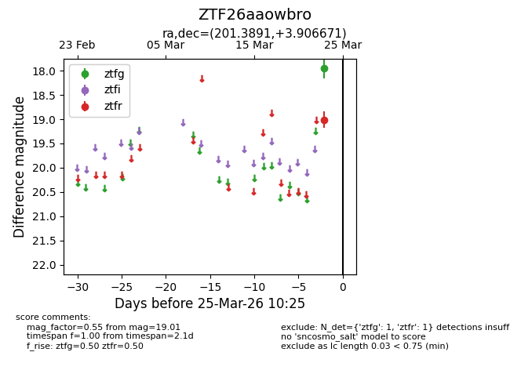
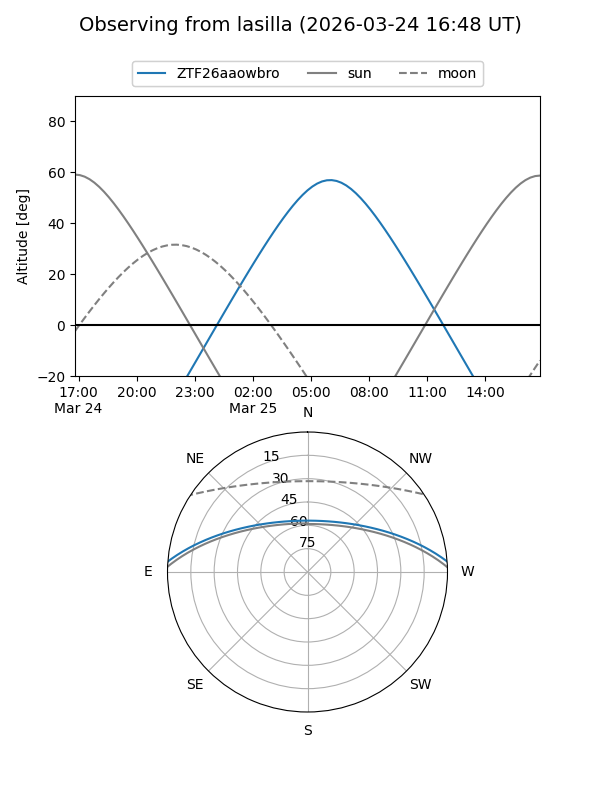
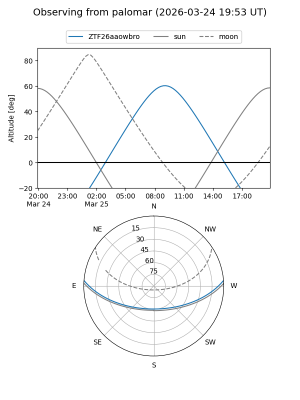

ZTF26aaowbro
Target ZTF26aaowbro at 2026-03-25 10:28
Aliases and brokers:
FINK: link
Lasair: link
ALeRCE: link
alt names
ZTF26aaowbro (ztf,fink_ztf)
Coordinates:
equatorial (ra, dec) = 201.3891,+3.90667
equatorial (HMS+DMS) = 13:25:33.38,+03:54:24.02
galactic (l, b) = (323.7462,+65.39034)
Flags:
Photometry:
last ztfg=17.95, ztfr=19.01
1 ztfg, 1 ztfr detections
Lightcurve

Visibility


Additional plots